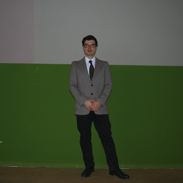
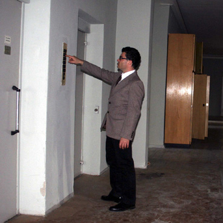
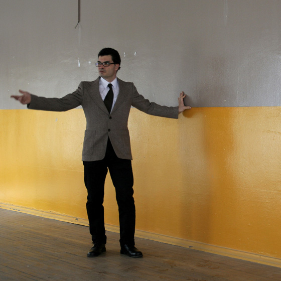

1965, Genève
  
L'activité artistique d'Adrien Kessler est principalement centrée sur l'écriture
de chansons et leur performance sur scène.
Il était initiateur, auteur, co-compositeur, contrebassiste chanteur du trio
Goz of Kermeur qui s'est forgé une solide réputation dans la scène Européenne
rock/expérimentale/ hard-core durant la fin des années 90. Beaucoup de concerts,
trois albums dont
le dernier était une commande d'œuvre de Pro Helvetia.
Le groupe a joué dans la plupart des grands festivals européens de musiques
nouvelles ainsi que celui de Victoriaville au Québec.
Il a tourné avec The Young Gods (2x) et Dominique A (2x) et partagé les scènes
d'Ornette Coleman, The Ex, Legendary Pink Dots, John Zorn Masada, Blurt, Napalm
Death, New Model Army... et beaucoup d'autres. Goz s'arrêta en 2000.
Adrien Kessler se lance alors dans quelques collaborations avec le théâtre,
la danse et le cinéma, tourne comme contrebassiste avec Jacques Demierre et
avec Blurt, et ne cesse d'écrire.
Parallèlement, il devient peu à peu, sound-designer et mixeur de films, et
est appelé pour son écoute, à une collaboration continue avec la section cinéma
de l'Ecole des Beaux Arts de Genève depuis 2001 pour l'enseignement de la prise
de son, mais surtout le suivi des films et leur mixage.
Il répond en 2003 à une commande-carte blanche du Théâtre de l'Arsenic à Lausanne
par une performance solo piano-voix qui est éditée dans une revue de poésie
sonore.
Il travaille maintenant sur un nouveau groupe DARLING.
Discographie :
GOZ of KERMEUR (NPS 9201 distr. RecRec)
GOZ of KERMEUR "Irondelles" (recDec61 distr. RecRec)
GOZ "Mythoman" (shin1999.1 self distrib.)
Ted Milton meets GOZ of KERMEUR (45t NPS)
Le Tout Sur le Tout (Szene Schweiz Migros)
Haïkus Urbains (C1202 distr. RecRec)
SOUND OFF 2 pièces de GOZ live (Society for Non Conventional Music, Bratislava
SLK)
Der Klang "collectivo" (distr. RecRec)
Cadavre Exquis 1 (BRU(i)T)
MADAM REVUE SONORE 2
Adrien Kessler solo (héros-limite!)
Plus d'infos :
http://www.myspace.com/adrienkessler
 présentation | albums | artistes | shop | contact | liens | cave12
présentation | albums | artistes | shop | contact | liens | cave12